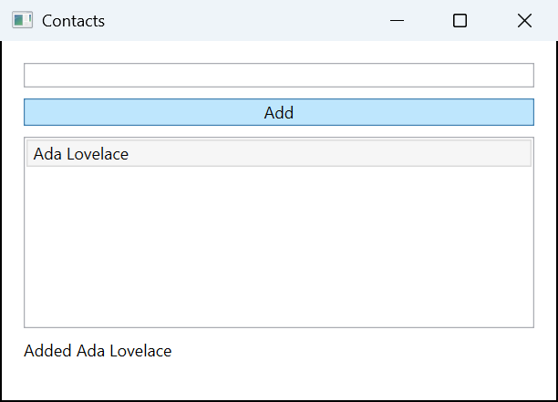

The problem: "done" without evidence
An agent that edits a desktop app can end its turn with a confident summary while the build is broken, a test fails, or the window shows the wrong thing. Unit tests do not see the real UI. You find out later, in review or by clicking through the app yourself. What you want is a check the agent cannot talk its way around: the work is finished only when your build, your tests, and a scenario in the running app all pass on the current files.
How it works
- A spec in your repository.
.pointframe/verify.jsonlists gates, which are commands you already run (dotnet build,dotnet test, or yournpmscripts), and scenarios for the built app. - Real UI, real controls. A scenario launches your built exe and drives it through UI Automation: invoke a button, enter text, check what the window shows. Each scenario names its criteria and carries a negative control, a check with a deliberately wrong expectation that must fail.
- Signed evidence. Each scenario writes a signed bundle:
report.json,evidence/screenshots, and anindex.html, plus averdict.jsonfor the run. - A pass tied to the files. Trust a pass only when
pointframe verify statusreports"fresh": true. Freshness covers the Git-visible working tree, the spec and the active-task snapshot. A spec with scenarios but no gates can pass but is never fresh (no_build_gate). Files ignored by.gitignoreand verify's own output are not counted. - A Stop hook, if you want one. When the agent tries to stop without a fresh pass, the hook runs the checks and, if they fail, blocks the stop and tells the agent what failed. It does not hold forever: the agent may stop unverified after five blocks or on an error only a person can fix, such as an untrusted or invalid spec, and the message then says the work was not verified.
What the evidence looks like
This is a screenshot from a signed evidence bundle of a passing run on the WPF Contacts sample in the repository. The scenario checked that an empty name is rejected, then added a contact and checked the status line.

You can reproduce it: the sample and its reference spec are in the repository.
Set up your agent
Download Pointframe.Cli-win-x64.zip and its .sha256 file from the latest release, check the hash, extract the ZIP, and from that folder run:
.\Pointframe.Cli.exe installThis copies the CLI to %LOCALAPPDATA%\Programs\Pointframe.Cli and adds it to your user Path. Open a new terminal and restart your agent so it sees the new Path. Then, from your project root, point the spec at your built exe and run it:
pointframe verify init --app bin/Release/net10.0-windows/MyApp.exe
pointframe verify run
pointframe verify statusverify init writes the spec and a Stop hook for Claude Code and Codex; add one scenario to the spec, with an action, the resulting state, and a negative control. The guide has the six-step recipe an agent can follow on its own, and pointframe verify setup gives your agent interactive desktop tools for exactly your app. Commit .pointframe/verify.json so the whole team gets it. Interacting with an app's controls is off until you set it up for that app.
Run it in CI too
Build and test gates run headless, so CI can run them. A CI job is the check nobody can skip: the hook is a local safety net that can be absent on a fresh clone or used up after five blocks. The guide has a ready workflow that downloads a pinned CLI release, checks its hash, and verifies the repository; see Run in CI.
Honest limits
- It does not prove your code is correct. It proves that the gates and scenarios your spec configures passed; a spec with only gates passes without launching an app.
- UI checks need an unlocked, interactive Windows desktop session, and they take over the mouse and keyboard while they run. It runs on Windows x64, and the toolchain your gates call must already be installed.
- Stopped is not verified. The hook blocks a failing stop at most five times in a session. After that the agent may stop, and the message says the work was NOT verified.
- Before you trust "done", run
pointframe verify statusand look for"status": "pass"and"fresh": true. For a project that matters, require a pass in CI as well.
Give your agent the real UI
Free and open source under the MIT license. Windows x64.
Frequently asked questions
Does it need the desktop app?
No. The CLI and the MCP server are standalone: no tray app and no .NET runtime. The desktop app is the separate screenshot tool for people.
Can it run headless?
Build and test gates can, including in CI. Checks of the real UI need an unlocked, interactive Windows session; a Windows service in session 0 cannot capture the user desktop.
What does a pass establish?
That the gates and scenarios your spec configures all passed. A spec with only gates passes without launching an app, so UI coverage is only what your scenarios check. Trust a pass only when pointframe verify status reports fresh: true. Freshness covers the Git-visible working tree, the spec and the active-task snapshot. A spec with scenarios but no gates can pass but is never fresh (no_build_gate). Files ignored by .gitignore and verify's own output are not counted. It does not prove your code is correct.